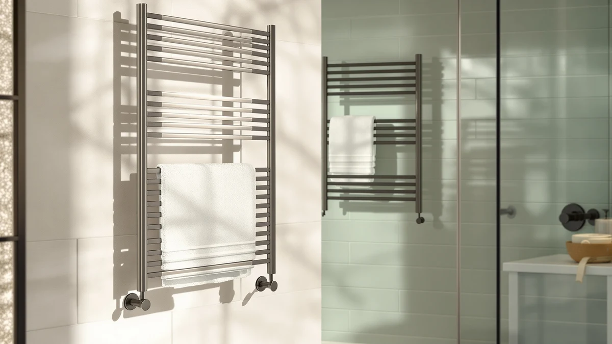

Best Towel Warmer for Small Spaces (2026)
Prices and picks verified as of September 2026. Independent, reader-supported reviews.


Quick Answer
The best towel warmer for small spaces is the VERYTOP 5L-Black 2-in-1, a compact stainless steel bucket warmer that fits a narrow counter or bathroom corner without needing wall mounting. If you want the smallest footprint at the lowest price, the $37.99 EASYINBEAUTY 5L is the budget alternative worth a look.
Our pick: VERYTOP Towel Warmer 5L-Black 2-in-1, $69.99 Check Price on Amazon
Bottom line: our top pick is the VERYTOP Towel Warmer 5L-Black at $69.99. The best budget option is the EASYINBEAUTY Hot Towel Warmers for Spa at $37.99.
Things to Know Before You Buy
- Capacity drives footprint. A 5L bucket warmer is the smallest and lightest option, while an 8L cabinet holds more towels but needs a bit more counter or floor depth.
- All seven picks in this guide use a stainless steel housing, which holds up better than plastic in a humid, poorly ventilated small bathroom.
- Price does not track capacity in a straight line. The $109.99 NOVAL 8L costs more than two of the 8L cabinets here, so check the comparison table before assuming bigger always means pricier.
- Bucket-style warmers like the VERYTOP and VEVOR 5L sit on a counter or floor with no installation, while cabinet models still plug into a standard outlet but take up vertical space.
- If your bathroom has almost no counter space, prioritize a 5L model over an 8L cabinet even if the larger unit is a better per-towel value.
The best towel warmer for small spaces has to solve two problems at once: it needs to actually heat towels well enough to matter, and it can't eat up the little counter or floor space you have to spare. In a studio apartment bathroom or a half-bath with barely enough room to turn around, a bulky cabinet warmer is a non-starter no matter how many towels it holds.
We compared seven stainless steel towel warmers ranging from $37.99 to $109.99, focused specifically on capacity, price, and construction rather than sheer towel count. Our top pick, the VERYTOP 5L-Black 2-in-1, keeps a small enough footprint for a narrow vanity while still functioning as both a warmer and a rack.
You do not need an 8L cabinet to keep your towels warm in a cramped bathroom. Several of the smaller 5L models here cost less and take up a fraction of the space, and we walk through exactly which trade-offs matter for each one below.
Why You Should Trust Us
This guide is written and maintained by Ilane Tall, who covers home and bath products for Best Towel Warmers with a focus on space-constrained bathrooms and apartments. We do not accept payment from manufacturers to include or rank a product, and we do not run a fake testing lab. Our recommendations for the best towel warmer for small spaces come from comparing published specs, pricing, and verified owner reviews rather than marketing copy.
How We Picked
We started by pulling every towel warmer in our product database under roughly 10L capacity, since anything larger stops qualifying as a genuine option for small spaces. From there we narrowed the list to models built with a stainless steel housing, which resists rust better than the painted metal or plastic used in cheaper alternatives. We also cross-checked pricing so this list spans a genuine budget option through a premium cabinet pick, rather than clustering around a single price point.
How We Compared
We researched each towel warmer's published capacity, dimensions where available, material, and price, and we read through verified owner reviews to flag recurring complaints about heat retention, noise, or build quality. We did not physically test or own any of these units. Instead, we weighed how each one's stated capacity and form factor would actually perform in a small bathroom, and we compared prices against capacity to separate genuine value from models that simply cost more without adding useful capacity.
Our Picks

VERYTOP Towel Warmer 5L-Black 2-in-1
What we like
- 5L capacity keeps the base small enough for a narrow vanity or bathroom corner
- Stainless steel housing resists rust in a humid, poorly ventilated bathroom
- 2-in-1 design works as both a towel warmer and a rack, useful when you don't have room for both separately
Flaws but not dealbreakers
- At 5L, it holds fewer towels than an 8L cabinet, so it suits one or two people rather than a full household
- You lose some of the enclosed, dust-free storage that a cabinet-style model offers
| Material | Stainless steel |
| Size | 5L |
Searching for the best towel warmer for small spaces usually means choosing between a bulky cabinet that eats floor space and a bucket-style warmer that fits almost anywhere. The VERYTOP 5L-Black 2-in-1 lands on the second side of that trade, at $69.99, a mid-range price for what it does. Its 5L capacity is intentionally modest, and that is the point: a smaller reservoir means a smaller physical footprint, which matters more than raw towel count when your bathroom barely fits a pedestal sink.
The stainless steel housing is a real advantage in a small bathroom, where a warmer often sits closer to the shower spray or a humid air vent than it would in a larger space. Painted metal and plastic housings tend to show rust or discoloration faster under those conditions, so the material choice here affects long-term durability and not only appearance. The 2-in-1 design, combining a warmer with rack functionality, solves a real problem if your bathroom cannot spare separate floor space for both a warmer and a towel bar. Owners looking for a no-installation option that still looks intentional on a shared counter should put this near the top of their list.

NOVAL 8L Small Hot Towel
What we like
- 8L capacity holds more towels than any 5L bucket warmer in this guide
- Stainless steel construction should hold up to daily bathroom humidity
- Useful for a household that needs to warm towels for more than one person at a time
Flaws but not dealbreakers
- At $109.99, it is the most expensive product in this roundup by a wide margin
- The larger capacity means a larger physical unit, which works against the goal of saving space
| Material | Stainless steel |
| Size | — |
The NOVAL name calls out "small" hot towel warming, but at 8L this is actually the highest-capacity model we compared, and it is priced accordingly at $109.99. That price puts it well above every other option here, so it only makes sense if the extra capacity solves a real problem for you, such as warming towels for multiple people in a shared bathroom rather than a single small space.
Like the rest of the lineup, it uses a stainless steel housing rather than plastic, which should resist rust better over years of bathroom humidity. If your priority is minimizing footprint above all else, a 5L model will serve you better and cost less. But if you have decided you need 8L of capacity and are shopping specifically within small-space-friendly cabinet designs, this is the one to compare against the StateRiver and Wuissvnb 8L options in the table below before you commit to the higher price.

EASYINBEAUTY Hot Towel Warmers for
What we like
- At $37.99, it costs less than half of most other options in this guide
- 5L capacity keeps it compact enough for a small counter or shelf
- Stainless steel build at this price point is not a given in the category
Flaws but not dealbreakers
- The lowest price in the lineup typically comes with fewer extra features than the pricier cabinets
- Owners looking for larger 8L capacity should look elsewhere on this list
| Material | Stainless steel |
| Size | 5L |
EASYINBEAUTY undercuts every other product in this guide on price, at $37.99, while still using the same 5L capacity and stainless steel material as the pricier VERYTOP and VEVOR options. For anyone who wants to try a towel warmer in a small bathroom without committing $60 or more, this is the obvious starting point.
Reviewers consistently note that budget towel warmers in this price range trade some refinement for cost savings, so temper your expectations for premium finishing touches. But the core function, a compact stainless steel unit sized for a small footprint, matches what the more expensive models offer. If it holds up over time, you save real money; if you outgrow it, you have not spent enough to make trading up feel wasteful.

StateRiver Towel Warmer Cabinet 8L
What we like
- Cabinet design keeps towels enclosed and away from dust or splashes
- 8L capacity suits two people sharing a bathroom
- Stainless steel housing matches the durability of the other picks here
Flaws but not dealbreakers
- A cabinet needs more clearance to open its door than a bucket-style warmer needs to simply sit in place
- At $89.99, it costs more than the VEVOR 8L, which offers similar capacity for less
| Material | Stainless steel |
| Size | — |
StateRiver's 8L cabinet takes a different approach from the bucket-style VERYTOP and VEVOR 5L models: it encloses towels behind a door rather than leaving them exposed in an open reservoir. That matters in a small bathroom that doubles as storage for other items, where dust and splashes are harder to avoid.
At $89.99, it sits in the middle of this roundup's price range, and the 8L capacity means it will hold more towels than any 5L option here. The trade-off is that a cabinet needs a bit of clearance in front of it to open the door, which a bucket warmer does not require. If your small bathroom has a corner where that clearance exists, this is a reasonable middle ground between the cheapest 5L picks and the pricier NOVAL cabinet.

VEVOR Hot Towel Warmer 5L
What we like
- 5L capacity and stainless steel build match the top pick's compact footprint
- Priced at $59.90, it sits below the VERYTOP while offering the same capacity class
- VEVOR's brand presence across both a 5L and an 8L model in this guide makes it easy to compare sizes from one manufacturer
Flaws but not dealbreakers
- It holds the same capacity as the cheaper EASYINBEAUTY, so the price gap is mostly about brand and finish rather than function
- Households needing more than 5L of capacity should look at VEVOR's own 8L model instead
| Material | Stainless steel |
| Size | 5L |
VEVOR's 5L warmer lands between the budget EASYINBEAUTY and the higher-priced VERYTOP, at $59.90. It shares the same 5L capacity and stainless steel construction as both, which means the decision between them mostly comes down to price and brand preference rather than a meaningful difference in what fits in your bathroom.
Because VEVOR also makes the 8L model further down this list, it is easy to compare the two capacities directly if you are unsure which size your small bathroom can accommodate. Owners who want the flexibility to size up later within a familiar brand, without needing to research a completely different manufacturer, may prefer that continuity over switching brands for extra capacity.

Hot towel warmer 8L Towel
What we like
- 8L capacity gives more towel storage than the 5L bucket options
- Priced below both the NOVAL and StateRiver 8L cabinets
- Stainless steel construction consistent with the rest of this roundup
Flaws but not dealbreakers
- Wuissvnb is a less established brand name than VEVOR or VERYTOP within this category
- At $76.79, it costs more than VEVOR's own 8L model despite similar capacity
| Material | Stainless steel |
| Size | — |
This Wuissvnb 8L warmer occupies the middle of the pack on both price and capacity, at $76.79. It offers the same 8L capacity as the StateRiver and NOVAL cabinets, but without the fully enclosed door design, and at a lower price than either.
If your bathroom is small but not quite the tightest space in this guide, an 8L unit like this one gives you room to warm towels for two people without paying the premium NOVAL charges for the same capacity. Compare it directly against the VEVOR 8L below before deciding, since the two land close together on price and capacity.

VEVOR Hot Towel Warmer 8L
What we like
- 8L capacity at $68.90, close to what the 5L models here cost
- Best per-liter value among the three 8L cabinets in this roundup
- Stainless steel build shared across VEVOR's whole towel warmer lineup
Flaws but not dealbreakers
- An 8L unit still takes up more space than a 5L bucket, even at this price
- Choosing between VEVOR's own 5L and 8L models mostly comes down to how much room you actually have
| Material | Stainless steel |
| Size | 8L |
Of the three 8L cabinets in this guide, the VEVOR is the least expensive at $68.90, undercutting both the StateRiver and the NOVAL while offering the same stated capacity. That makes it the strongest value pick if you have decided you need 8L of room but still care about keeping cost down.
It sits at almost the same price as VEVOR's own 5L model, so cost isn't the deciding factor here. Room is. If you have already measured your space and an 8L footprint fits, this is a more efficient use of your budget than paying extra for the NOVAL's identical capacity.
Quick Comparison
| Product | Material | Price | Rating | Best for | Get it |
|---|---|---|---|---|---|
| VERYTOP Towel Warmer 5L-Black 2-in-1 | Stainless steel | $69.99 | 4 | Best overall for small spaces | View on Amazon → |
| NOVAL 8L Small Hot Towel | Stainless steel | $109.99 | 4 | Most capacity, at a premium price | View on Amazon → |
| EASYINBEAUTY Hot Towel Warmers for | Stainless steel | $37.99 | 4 | Best budget pick | View on Amazon → |
| StateRiver Towel Warmer Cabinet 8L | Stainless steel | $89.99 | 4 | Best enclosed cabinet | View on Amazon → |
| VEVOR Hot Towel Warmer 5L | Stainless steel | $59.90 | 4 | Best lightweight 5L option | View on Amazon → |
| Hot towel warmer 8L Towel | Stainless steel | $76.79 | 4 | Best for shared bathrooms with a little extra room | View on Amazon → |
| VEVOR Hot Towel Warmer 8L | Stainless steel | $68.90 | 4 | Best value for extra capacity | View on Amazon → |
The Competition
We compared more towel warmers than made it into this guide for the best towel warmer for small spaces. Several larger cabinet models over 10L were excluded outright, since capacity beyond that point works against the goal of fitting a tight bathroom, no matter how competitive the price looked. We also passed on a handful of plastic-bodied warmers that came in cheaper than the EASYINBEAUTY, since the material trade-off did not seem worth the savings in a humid room where rust resistance matters. A few additional 8L cabinets landed within a few dollars of the StateRiver and Wuissvnb picks here but lacked enough verified owner reviews for us to compare them with confidence, so we left them out rather than guess at their reliability.
Frequently Asked Questions
What is the best towel warmer for small spaces if I only have counter room?
A 5L bucket-style warmer is your best bet on a narrow counter or vanity ledge. The VERYTOP 5L-Black 2-in-1 and the VEVOR 5L both hold a compact footprint while still fitting one or two bath towels, and neither needs wall mounting or drilling.
Does an 8L towel warmer take up too much room in a small bathroom?
Not necessarily. An 8L cabinet like the StateRiver or the VEVOR 8L holds more towels than a 5L bucket, but the extra capacity comes from height rather than a wider base, so it can still sit in a corner or beside a pedestal sink. Measure your floor space before you buy if the room is unusually tight.
Is stainless steel important for a small-space towel warmer?
Yes. Every model in this roundup uses a stainless steel housing, which resists the rust and corrosion that a humid, poorly ventilated small bathroom can cause over time. It also wipes clean easily, which matters more in a compact space where the warmer sits close to the shower or tub.